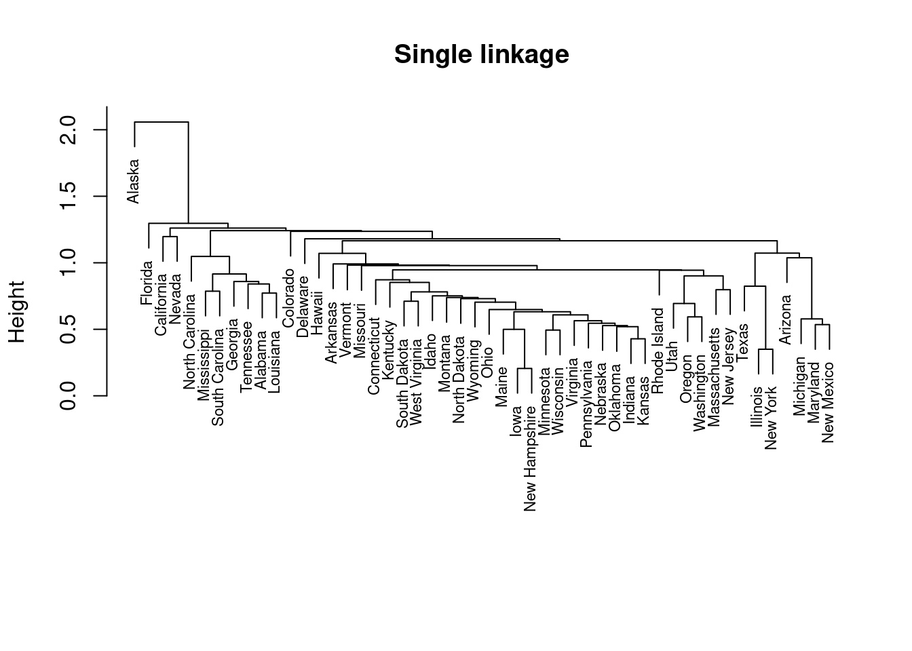
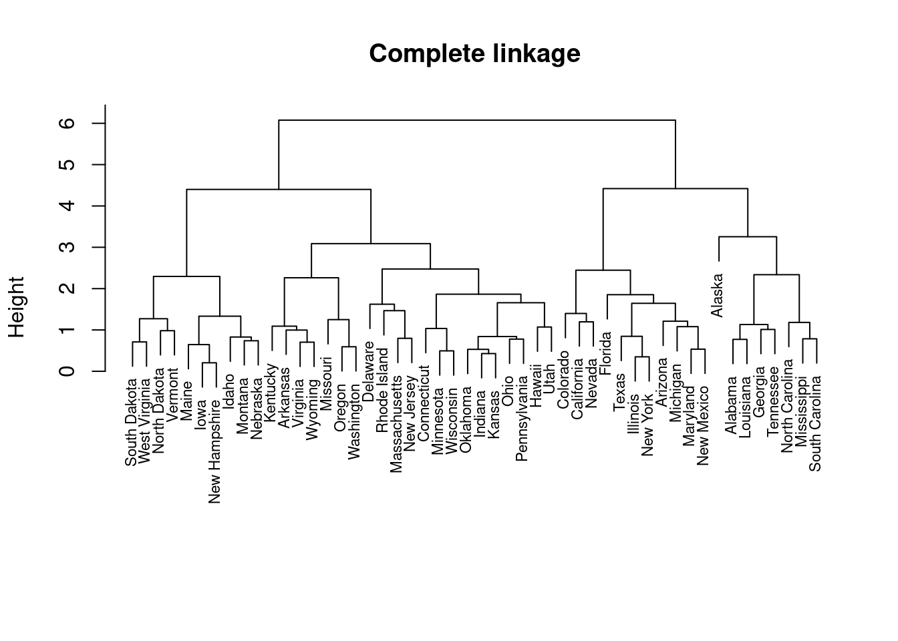
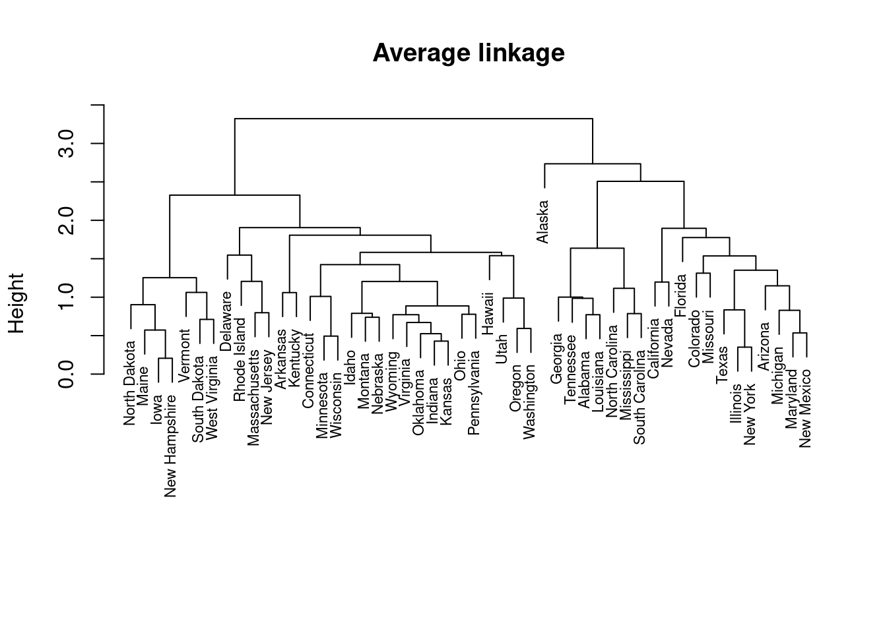
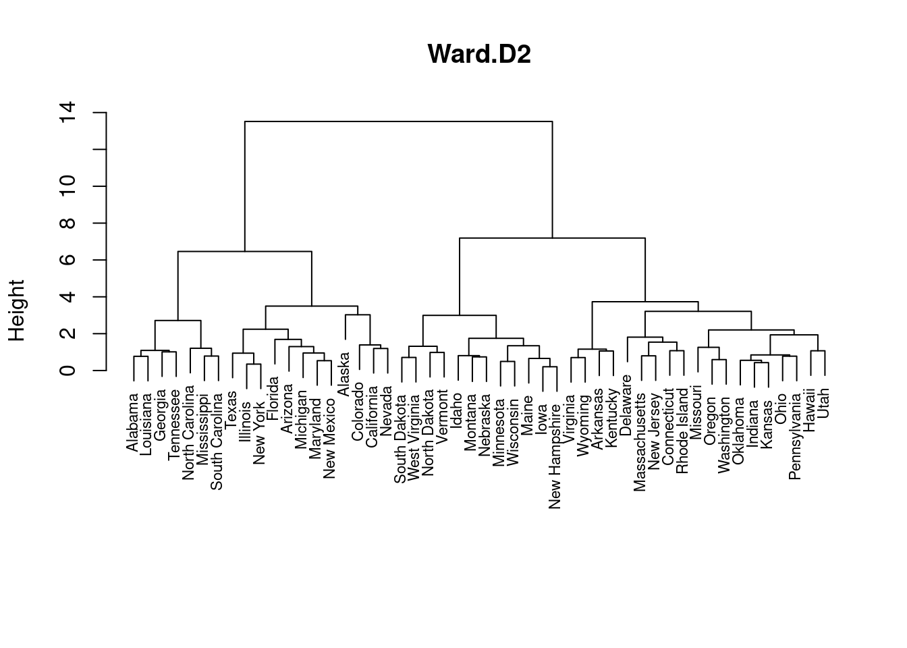
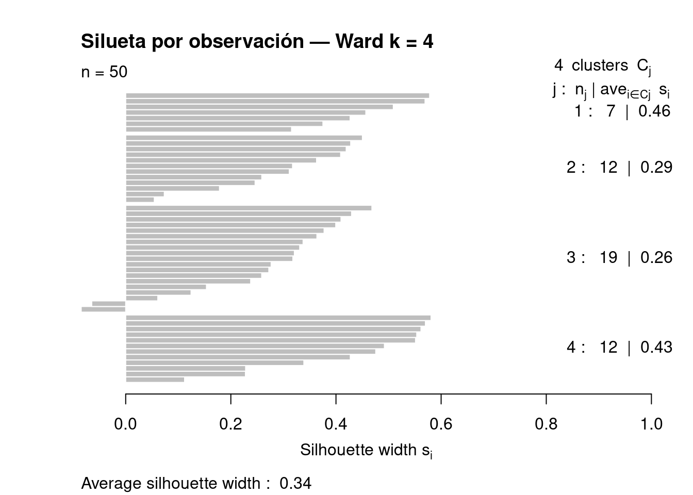
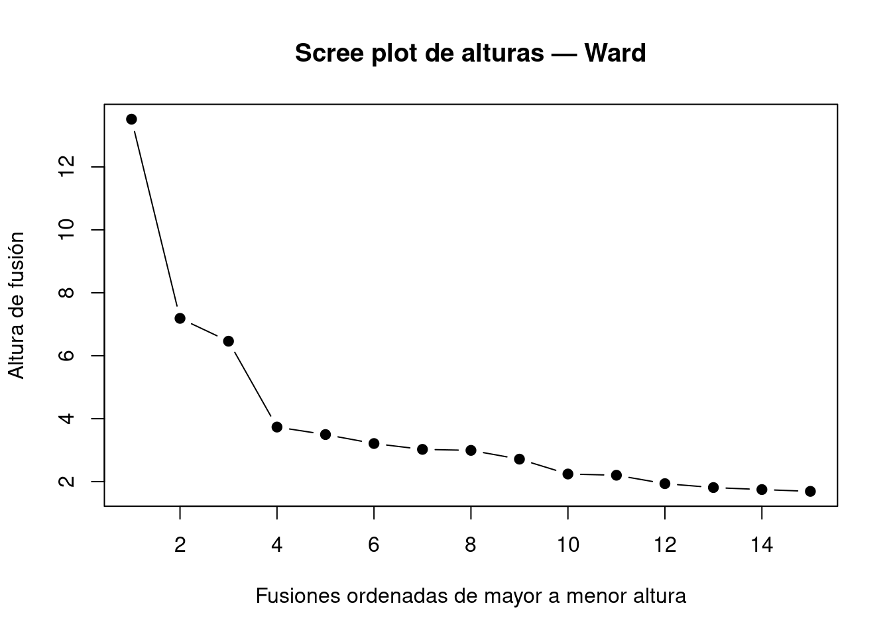
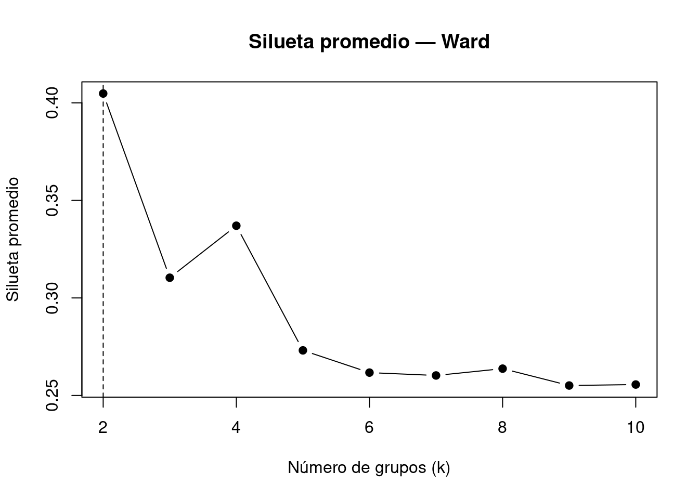

En esta parte empezamos a trabajar con agrupamientos.
La pregunta central es:
¿Puedo formar grupos de observaciones parecidas y defender que esos grupos tienen sentido?
En unidades anteriores usamos PCA, PCoA o NMDS para ver estructura en los datos. Ahora damos un paso más: intentamos convertir parte de esa estructura en grupos concretos.
Hay dos caminos principales.
Clustering jerárquico construye una historia de uniones. Empieza con cada observación separada y las va uniendo según su parecido. El resultado es un dendrograma. Después decidimos dónde cortar ese árbol.
Clustering no jerárquico no construye un árbol. Busca directamente una partición. El ejemplo principal es k-means: primero elegimos cuántos grupos queremos y después el algoritmo intenta formarlos.
Clustering jerárquico:
observaciones separadas → uniones sucesivas → dendrograma → corte
K-means:
elijo k → centroides → asignación de puntos → grupos finales
En este recorrido vamos a separar dos cosas que muchas veces aparecen mezcladas en los scripts:
Método estadístico:
lo que calcula el agrupamiento.
Visualización:
gráficos que ayudan a ver mejor, pero no reemplazan al método.
Esto ayuda a no confundir una función de gráfico con el análisis principal.
Preparación de datos
Vamos a trabajar primero con USArrests. Cada fila es un estado de Estados Unidos. Las variables son medidas de criminalidad y urbanización.
Murder Assault UrbanPop Rape
Min. : 0.800 Min. : 45.0 Min. :32.00 Min. : 7.30
1st Qu.: 4.075 1st Qu.:109.0 1st Qu.:54.50 1st Qu.:15.07
Median : 7.250 Median :159.0 Median :66.00 Median :20.10
Mean : 7.788 Mean :170.8 Mean :65.54 Mean :21.23
3rd Qu.:11.250 3rd Qu.:249.0 3rd Qu.:77.75 3rd Qu.:26.18
Max. :17.400 Max. :337.0 Max. :91.00 Max. :46.00
Las variables no están en la misma escala. Por eso las estandarizamos antes de calcular distancias o aplicar k-means.
USArrests_scale <-scale(USArrests)
La idea es simple: si una variable tiene diferencias numéricas mucho más grandes, puede dominar la distancia. El escalado evita eso.
Distancias
El clustering jerárquico parte de una matriz de distancias. Primero tenemos que decidir qué significa “parecido”.
La distancia euclidiana es la más habitual para datos numéricos escalados. Manhattan también puede usarse, y suele ser menos sensible a diferencias extremas.
Una forma básica de mirar la matriz de distancias es con un heatmap.
El orden visual importa mucho. Si las filas quedan en orden alfabético, puede no verse ningún patrón. Cuando el heatmap reordena por similitud, pueden aparecer bloques.
Clustering jerárquico
El clustering jerárquico empieza con cada observación separada y va uniendo observaciones o grupos.
La secuencia es:
datos escalados → matriz de distancias → linkage → dendrograma → corte
Linkage
Cuando ya se formaron grupos, necesitamos decidir cómo medir la distancia entre un grupo y otro. Eso es el linkage.
single = mínima distancia entre grupos
complete = máxima distancia entre grupos
average = promedio de distancias entre grupos
Ward.D2 = une grupos minimizando el aumento de variabilidad interna
plot(hc_single, main ="Single linkage", sub ="", xlab ="", cex =0.7)

plot(hc_complete, main ="Complete linkage", sub ="", xlab ="", cex =0.7)

plot(hc_average, main ="Average linkage", sub ="", xlab ="", cex =0.7)

plot(hc_ward, main ="Ward.D2", sub ="", xlab ="", cex =0.7)

El dendrograma no es una verdad única. Cambia si cambiamos la distancia o el linkage. Ward suele generar grupos compactos y de tamaño más parejo, por eso muchas veces es una buena opción inicial.
Corte del dendrograma
El dendrograma muestra toda la historia de uniones. Para obtener grupos concretos hay que cortarlo.
grupos_ward4 <-cutree(hc_ward, k =4)table(grupos_ward4)
cutree() convierte el árbol en una partición. En este caso pedimos 4 grupos.
Silueta por observación
Antes de usar la silueta para elegir k, conviene entender qué mide en una observación.
Para cada observación, la silueta compara dos ideas:
a = qué tan lejos está de los puntos de su propio grupo
b = qué tan lejos está del grupo vecino más cercano
La lectura es:
cerca de 1 = bien asignada
cerca de 0 = está en una frontera
negativa = podría encajar mejor en otro grupo
Primero miramos la silueta para una partición concreta. En este caso usamos el corte con k = 4.
library(cluster)sil_4 <-silhouette(grupos_ward4, dist_euc)plot(sil_4, main ="Silueta por observación — Ward k = 4")

Este gráfico no elige k. Sirve para revisar, dentro de una solución ya elegida, qué observaciones quedaron bien asignadas y cuáles son dudosas.
Elección de la cantidad de grupos
Después de entender la silueta individual, podemos usar promedios para comparar distintas cantidades de grupos.
No hay una única regla. Usamos varios apoyos.
Alturas de fusión
Cada unión del dendrograma ocurre a una altura. Una altura grande indica que se están juntando grupos más distintos.
heights <-sort(hc_ward$height, decreasing =TRUE)n_max <-15plot(1:n_max, heights[1:n_max],type ="b",pch =19,xlab ="Fusiones ordenadas de mayor a menor altura",ylab ="Altura de fusión",main ="Scree plot de alturas — Ward")

Buscamos saltos grandes. El corte suele ubicarse antes de empezar a unir grupos demasiado distintos.
Silueta promedio para comparar k
Ahora repetimos el cálculo para varios valores de k y guardamos un solo resumen: el promedio de las siluetas individuales.
sil_ward <-sapply(2:10, function(k) { grupos <-cutree(hc_ward, k = k) sil <-silhouette(grupos, dist_euc)mean(sil[, 3])})plot(2:10, sil_ward,type ="b",pch =19,xlab ="Número de grupos (k)",ylab ="Silueta promedio",main ="Silueta promedio — Ward")abline(v =which.max(sil_ward) +1, lty =2)

La silueta promedio ayuda a comparar particiones. Los criterios pueden no coincidir; eso no es un error. Miran cosas distintas.
Visualizaciones opcionales
Estas funciones son útiles para presentar, pero no reemplazan al cálculo principal.
library(factoextra)
Cargando paquete requerido: ggplot2
Welcome to factoextra!
Want to learn more? See two factoextra-related books at https://www.datanovia.com/en/product/practical-guide-to-principal-component-methods-in-r/
library(ggplot2)fviz_dend(hc_ward,k =4,rect =TRUE,cex =0.6,main ="Dendrograma Ward — k = 4")
fviz_cluster() proyecta los datos en dos dimensiones para poder verlos. Los grupos ya fueron calculados antes.
Comparación de dendrogramas
Podemos comparar dos dendrogramas para ver cuánto cambia la estructura al cambiar el linkage.
library(dendextend)
---------------------
Welcome to dendextend version 1.19.1
Type citation('dendextend') for how to cite the package.
Type browseVignettes(package = 'dendextend') for the package vignette.
The github page is: https://github.com/talgalili/dendextend/
Suggestions and bug-reports can be submitted at: https://github.com/talgalili/dendextend/issues
You may ask questions at stackoverflow, use the r and dendextend tags:
https://stackoverflow.com/questions/tagged/dendextend
To suppress this message use: suppressPackageStartupMessages(library(dendextend))
---------------------
Adjuntando el paquete: 'dendextend'
The following object is masked from 'package:stats':
cutree
También podemos resumir la similitud con una correlación cofenética.
cor_cophenetic(dend_ward, dend_avg)
[1] 0.843143
Valores cercanos a 1 indican dendrogramas más parecidos.
K-means
K-means no construye un árbol. Hay que definir antes cuántos grupos queremos formar.
La idea es:
1. Se colocan k centroides iniciales.
2. Cada observación se asigna al centroide más cercano.
3. Se recalcula cada centroide como promedio de su grupo.
4. El proceso se repite hasta que las asignaciones se estabilizan.
El objetivo es formar grupos compactos alrededor de centroides.
Ejemplo con datos simulados
library(MASS)set.seed(42)grupo_sim <-c(rep("A", 40), rep("B", 40), rep("C", 40))X_sim <-rbind(mvrnorm(40, mu =c(0, 0), Sigma =diag(0.5, 2)),mvrnorm(40, mu =c(5, 0), Sigma =diag(0.5, 2)),mvrnorm(40, mu =c(2.5, 4), Sigma =diag(0.5, 2)))colnames(X_sim) <-c("V1", "V2")plot(X_sim)
0 = promedio general
+ = por encima del promedio
- = por debajo del promedio
Con estos centroides podemos describir perfiles:
Grupo 1: bajo en todas las variables.
Grupo 2: urbanización alta, criminalidad baja o moderada.
Grupo 3: homicidios altos, urbanización baja.
Grupo 4: urbanización y criminalidad altas.
* Cluster stability assessment *
Cluster method: kmeans
Full clustering results are given as parameter result
of the clusterboot object, which also provides further statistics
of the resampling results.
Number of resampling runs: 100
Number of clusters found in data: 4
Clusterwise Jaccard bootstrap (omitting multiple points) mean:
[1] 0.9360148 0.9268529 0.9384206 0.9228672
dissolved:
[1] 2 0 1 2
recovered:
[1] 90 96 91 93
Con bootstrap se remuestrean filas con reposición. En este caso, estados. Algunos se repiten y otros quedan afuera. Luego se vuelve a correr k-means y se compara si los grupos originales reaparecen.
La comparación se hace con Jaccard:
Jaccard >= 0.75 = grupo muy estable
0.60 <= Jaccard < 0.75 = estabilidad moderada
Jaccard < 0.60 = grupo inestable
* Cluster stability assessment *
Cluster method: kmeans
Full clustering results are given as parameter result
of the clusterboot object, which also provides further statistics
of the resampling results.
Number of resampling runs: 100
Number of clusters found in data: 4
Clusterwise Jaccard replacement by noise mean:
[1] 0.8349346 0.8578561 0.8517460 0.8805081
dissolved:
[1] 4 1 15 4
recovered:
[1] 66 80 80 81
* Cluster stability assessment *
Cluster method: kmeans
Full clustering results are given as parameter result
of the clusterboot object, which also provides further statistics
of the resampling results.
Number of resampling runs: 100
Number of clusters found in data: 4
Clusterwise Jaccard jittering mean:
[1] 1 1 1 1
dissolved:
[1] 0 0 0 0
recovered:
[1] 100 100 100 100